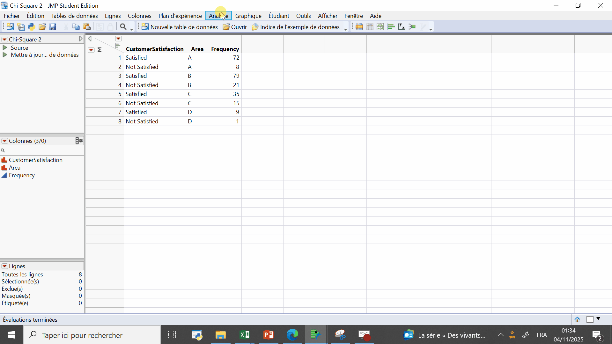

Procédure 35 · Tests d’hypothèses
Test du Khi-deux sur tableau de contingence
Procédure pas à pas
- Préparer une colonne par variable catégorielle et, si les données sont agrégées, une colonne pour les fréquences.
- Ouvrir Analyse → Ajuster Y en fonction de X.
- Associer les deux variables catégorielles à X et Y.
- Si nécessaire, affecter la colonne de comptage au rôle Fréquence.
- Valider puis examiner la p-value du test du Khi-deux.
Télécharger les données pour JMP
Ouvrir ce fichier dans JMP, puis suivre les étapes de la procédure et les animations associées.
↓ Télécharger Chi-Square 001.XLSFormat .XLS ; fichier d’exercice original, sans modification.
Jeu de données / résultat
Fichier cité : Chi-Square 1.xls
Point de vigilance : Vérifier les effectifs attendus ; une p-value significative ne signifie pas que tous les groupes diffèrent.
Démonstrations animées dans JMP
Animations extraites du PowerPoint « Lean Six Sigma avec JMP 003 ». Elles complètent les étapes numérotées ci-dessus.
